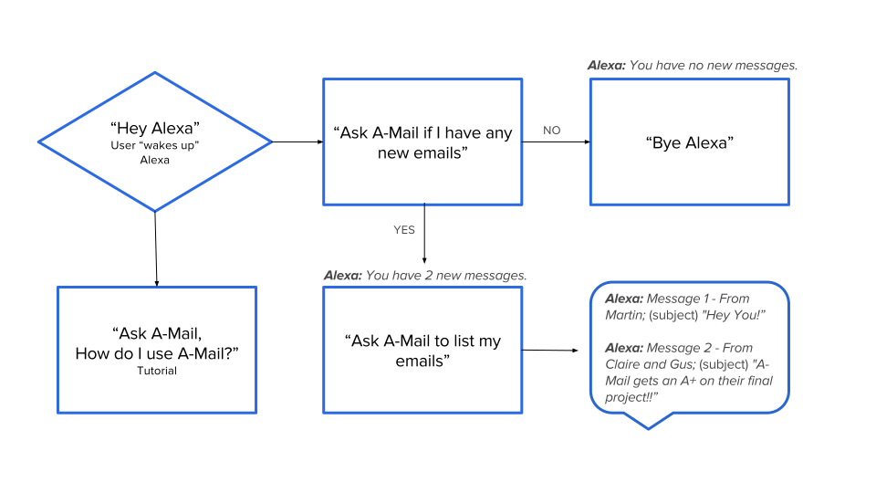
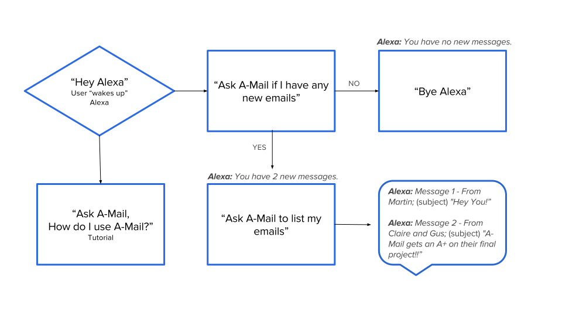

Background
We created a productivity skill (app) for the Amazon Echo that gives the user access to his/her gmail account. This product is universally accessible (excluding individuals with auditory disabilities) and the target audience is almost everyone. However, for this specific project, our primary audience is people with low vision or blindness; especially, older individuals who recently lost their vision and have limited technical experience and knowledge.
Link to full documentation
User Research
We broke down the project into two parts: user interface design and back-end development. For the user interface design, since it's not a visual interface, but a voice interface, the research was based on how the user activates and interacts with the Echo verbally.
My role was to find users and conduct interviews in order to come up with real utterances that people will actually use.
My role was to find users and conduct interviews in order to come up with real utterances that people will actually use.
USER 1: Nina
- About Alexa: Likes that Alexa answers everything Uses Alexa for really basic things such as news, timer, Pandora. "Do not use as much as I could"
- Her Disability: Low vision-has a hole in her retina Other eye is functional but gets tired very fast
- Tech Skill: Does not like using her computer Will use her Ipad Will pitch her voice higher if device is having trouble recognizing speech Is accustomed to saying "Hey Siri"
- What she does with Gmail: Basic writing and reading emails Does not use filters or circles
User 2: Lee
- About Alexa: Likes the idea of it, did not know it existed (wants to buy it)
- His Disability: He is legally blind He is worried about developing bad tech habits
- Tech Skills: Uses JAWS Does not like using Iphone (Voice Over is too difficult) Gets tired of using Siri real fast, will have his wife activate "Okay Google" on her phone. Is accustomed to saying "Hey Siri" Has bad results with voice recognition because of respiratory problems Will only check mail with Iphone but will not do other things with it
- What he does with Gmail: Has trouble with attachments in emails--anything outside the general text is stressful to deal with. Doesn't want the device to describe the attachment, just notify if there is one (will probably ask sender about it in an email)
User 3: Rebecca
- She is not familiar with Alexa. However, she has experience working with Dragon. She mentioned that she usually does not work with voice interfaces with her students.
- She is an Orientation and Mobility Specialist at LightHouse in Northern California.

Design
I started off with these utterances for code testing purposes:
The idea behind the progression from short to long utterances is that as the user becomes more familiar with Alexa, he/she will become more comfortable using informal commands. This relates back to Amazon's guidelines about talking to Alexa as if "you were talking to a friend." 
- Do I have any new email?
- Do I have any new messages?
- How many emails do I have?
- Open my inbox.
- Open my mail box.
- Read my emails.
- Read emails.
- Emails.
The idea behind the progression from short to long utterances is that as the user becomes more familiar with Alexa, he/she will become more comfortable using informal commands. This relates back to Amazon's guidelines about talking to Alexa as if "you were talking to a friend." 
Iteration 1
We tested our first iteration on Nina. In doing so we learned that- Gmail-app gets tiring to say and is hard to remember
- Labels were being read in an unappealing and confusing manner
- "Labels are CATEGORY underscore Personal Jasmine Test"
Iteration 2
We conducted an A/B Test on Lee to see if we would get better results if we used A-mail versus Gmail-app. We also had Nancy test the second iteration of Amail.Lee's Results
- Added utterances that Leo kept trying to use to activate A-mail.
- Labels were being read in an unappealing and confusing manner
- "Labels are CATEGORY underscore Personal Jasmine Test"
Nina's Results
- Made utterances more consistent with OTHER skills for Alexa such as "what are my labels."
- We also implemented a tutorial that can be accessed at any point during a voice session.
Prototype
Here's a video demonstration of our final prototype and a list of the final utterances.
- list my labels
- give me my labels
- what are my labels
- labels
- tell me my labels
- how many emails do i have
- how many emails
- how many
- new emails
- do i have any new messages
- do i have any new emails
- emails
- list my new messages
- list emails
- new messages
- list messages
- what are my emails
- tutorial
- how do i use a-mail
- easter egg